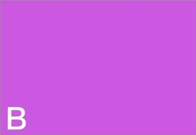
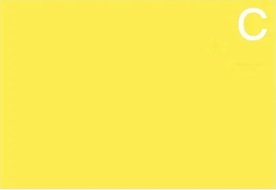

信箱：NoOne@Will.answer.com

| 這裡面你最討厭哪個顏色？請憑直覺回答最接近的。 | |
|---|---|
灰色
| 紫色  |
| 黃色  | 粉色 |
A：灰色…你覺得「優柔寡斷的人」最討厭
灰色是白色和黑色混合的顏色，是有點曖昧不明的顏色，你討厭這個顏色，說明你不擅長面對的類型是優柔寡斷的人，
這種人總是不會很明確的表達自己的想法，但是相對的，這樣類型的人很適合當作輔佐者，由你來負責指揮行動，
所以建議可以邀請「一起吃飯」或是「看電影」這種明確的邀約，讓你跟對方變得更加親近。
回主頁
其他測驗
B：紫色…你覺得「顯眼的人」最討厭
紫色是熱情的紅色和冷靜的藍色混合的顏色，你不擅長面對有決斷力或行動力，這種經常被人依靠的顯眼的人，
要和這種類型順利交往，最重要的是你必須依靠對方，但是這正是你不擅長的，你喜歡獨自行動，
就算有困難也覺得可以靠自己度過，所以這正是你面對這種人感到不擅長的原因。
回主頁
其他測驗
C：黃色…你覺得「自私的人」最討厭
黃色是表示奔放的顏色，你不擅長的是採取自私行動、引起騷動的人，就是有那種不管周圍的事、
對人際關係沒有興趣、缺乏協調性的人吧？如果相處不好的話，可能會被捲進亂七八糟的事情中，
所以為了和這種類型的人順利相處，必須好好下定決心，你只需要考慮自己的職責或義務，儘量不要去過多的干涉對方。
回主頁
其他測驗
D：粉色…你覺得「多管閒事的人」最討厭
粉色是象徵溫柔的顏色，你不擅長的面對感情很深、想幫助別人的心情很強烈的人，對你來說像是多餘的多管閒事吧？
要想和這種類型順利相處下去的話，不用客氣、儘可能拜託對方幫忙就對了，不要害怕被認為厚臉皮，拜託對方幫你做各種各樣的事情，
對方才會滿足於被人需要，這正是與這種類型的人相處的不二法門。
回主頁
其他測驗